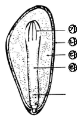
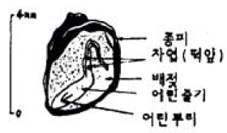

임업종묘기능사 (2013-04-14 기출문제)
1과목: 임의 구분
1. 다음 그림은 소나무류 종자의 종단면이다. 이 중 자엽은?

- ㉮
- ㉯
- ㉰
- ㉱
(정답률: 70%)

2. 종자를 60% 이상의 황산에 30~60분간 담갔다가 2~3일간 물로 씻은 다음 그늘에서 말려 발아촉진 시키는 수종은?
- 소나무
- 밤나무
- 옻나무
- 단풍나무
(정답률: 알수없음)
3. 강송 1년생의 1m2당 생립 기준 및 이식본수로 가장 적당한 것은? (단 파종을 하였을 때)
- 50본
- 300본
- 600본
- 1000본
(정답률: 알수없음)
4. 가지치기의 효과에 대한 설명이 틀린 것은?
- 수고생장에는 영향이 작으나, 직경생장이 촉진된다.
- 목재로서의 가지가 높은 무절재의 비율을 높일 수 있다.
- 하층목의 수광량을 증가시켜 생장을 촉진 시킨다.
- 산불이 있을 때 수관화를 경감시킨다 .
(정답률: 알수없음)
5. 다음 중 주로 삽목에 의하여 묘목생산을 하는 나무는?
- 소나무, 낙엽송
- 낙엽송, 잣나무
- 상수리나무 , 느티나무
- 포플러, 플라타너스
(정답률: 75%)
6. 공중휘묻이를 할 때 나무 가지의 껍질을 벗겨주는데 일반적으로 가장 알맞은 폭은?
- 0.3㎝
- 0.5~1.0㎝
- 1.5~2.0㎝
- 2.5~3.0㎝
(정답률: 80%)
7. 개벌작업의 장점을 가장 잘 설명한 것은?
- 잡초, 관목 등 식생이 무성하게 된다.
- 수풀이 아름답다.
- 수풀이 단조롭다.
- 경제적 수입이 좋다.
(정답률: 70%)
8. 타식성인 임목에서 근친간에 교잡을 실시하면 어떤 현상이 일어나는가?
- 자식약세
- 자식강세
- 잡종강세
- 잡종우세
(정답률: 알수없음)
9. 한 집단에서 좋은 형질을 지닌 개체(나무)들을 골라 육종에 사용하는 방법은?
- 선발육종법
- 교잡육종법
- 낙엽송
- 전나무
(정답률: 알수없음)
10. 종자 채취 즉시 노천매장을 하여야 하는 수종은?
- 소나무
- 향나무
- 낙엽송
- 전나무
(정답률: 알수없음)
11. 잣나무, 낙엽송, 편백묘를 이식할 때 양묘사업공정에 있어 한사람이 하루에 이식할 수 있는 묘상면적은 보통 몇 m2인가?
- 15m2
- 20m2
- 30m2
- 100m2
(정답률: 50%)
12. 다음 중 종자 추파의 장점이 아닌 것은?
- 종자의 저장처리가 필요 없어 노동력을 분산시킬 수 있다.
- 우량한 묘목의 생산이 가능하다.
- 발아력이 억제되기 쉬운 종자에 적합하다.
- 해토 즉시 발아하게 되므로 생장이 왕성하다.
(정답률: 40%)
13. 우리나라의 도입수종이 아닌 것은?
- 리기다소나무
- 이태리포플러
- 잣나무
- 방크스소나무
(정답률: 알수없음)
14. 다음 밤나무 품종 중 도입 품종이 아닌 것은?
- 축파
- 은기
- 이평
- 옥광
(정답률: 알수없음)
15. 현사시나무의 양친수로 옳은 것은?
- 은백양과 사시나무
- 은백양과 수원포플러
- 은백양과 물황철나무
- 사시나무와 황철나무
(정답률: 60%)
16. 낙엽송의 m2당 가장 적당한 파종량은?
- 15.2g
- 20.1g
- 35.8g
- 106.3g
(정답률: 알수없음)
17. 다음 중 발근 촉진처리제로 사용하지 않는 것은?
- 인돌부티르산
- 인돌아민산
- 인돌아세트산
- 나프탈렌아세트산
(정답률: 40%)
18. 채종 임분이란 함은?
- 수형목의 접목으로 만든 임분이다.
- 종자가 많이 맺히는 임분이다.
- 종자를 채취하기 위해서 선정된 우량 임분이다.
- 종자를 타기 쉽게 어릴 때 전정한 임분이다.
(정답률: 59%)
19. 채종원 또는 채수포에 필요한 접수와 삽수 및 종자를 채취할 목적으로 천연임분에서 우량한 형질의 개체를 선발, 법적으로 지정한 나무를 무엇이라 하는가?
- 우량목
- 수형목
- 정형목
- 선발목
(정답률: 64%)
20. 1-1-3 이 뜻하는 것은?
- 한 번 판갈이한 3년생 묘이다.
- 한 번 판갈이한 4년생 묘이다.
- 두 번 판갈이한 4년생 묘이다.
- 두 번 판갈이한 5년생 묘이다.
(정답률: 알수없음)
2과목: 임의 구분
21. 이태리 포플러(1-214 및 476)의 양친 수종은?
- 미루나무와 양버들
- 미루나무와 황철나무
- 미루나무와 용버들
- 미루나무와 물황철나무
(정답률: 47%)
22. 분근법으로 번식이 용이한 수종은?
- 단풍나무
- 밤나무
- 황매화
- 목련
(정답률: 73%)
23. 중복수정에 관한 설명으로 틀린 것은?
- 활엽수의 수정방법이다 .
- 화분립에서 나오는 2개의 웅핵은 모두 수정한다.
- 웅핵이 난핵과 수정한 것은 배, 다른 웅핵이 극핵과 수정한 것은 배유가 된다.
- 배는 3배체이고 배유는 2배체이다.
(정답률: 알수없음)
24. 한 다발에서 잎이 3개씩 나는 침엽수는?
- 소나무
- 해송
- 리기다소나무
- 잣나무
(정답률: 알수없음)
25. 버지니아소나무 파종시 1m2에서 1년생 유묘의 득묘 본수로 가장 적합한 것은?
- 500본
- 700본
- 900본
- 1,500본
(정답률: 알수없음)
26. 잡종 채종원은 무엇을 얻기 위한 채종원인가 ?
- 순계분리
- 수형목 종자
- 잡종모수
- 잡종종자
(정답률: 알수없음)
27. 소나무, 전나무, 낙엽송 씨앗 건조 방법은?
- 가열법
- 부숙법
- 햇볕건조
- 음지건조
(정답률: 알수없음)
28. 다음과 같은 구조로 되어 있는 임목종자는 ?

- 단풍나무
- 피나무
- 은행나무
- 소나무
(정답률: 알수없음)
29. 다음 중 중림작업을 기술한 것으로 틀린 것은?
- 같은 임지에 왜림과 교림을 동시에 세워두는 작업이다.
- 하목은 긴 윤벌기로 택벌하고 상목은 개벌로 벌채한다.
- 하목은 비교적 응달에 견디는 수종을 택하고 상목은 양성의 나무를 택한다.
- 상목의 수종은 나무의 줄기에서 부정아가 발생하지 않는 수종이어야 한다.
(정답률: 70%)
30. 수형목에 대한 설명으로 가장 옳은 것은?
- 종자가 많이 달리는 나무를 말한다.
- 주위에 자라는 나무에 비해 뛰어나게 좋은 형질을 보이는 나무를 말한다.
- 특수한 수형을 갖추어 재료를 보전할 만한 나무를 말한다.
- 잡종성이 강한 나무를 말한다.
(정답률: 알수없음)
31. 산림갱신을 위한 벌채가 아닌 것은?
- 제벌
- 예비벌
- 산벌
- 군상벌
(정답률: 알수없음)
32. 판갈이 할 때 묘목의 뿌리를 자르는 주된 목적은?
- 일을 쉽게 하기 위하여
- 잔뿌리를 많이 나게 하기 위하여
- T/R율을 더 크게 하기 위하여
- 양분의 소모를 적게 하기 위하여
(정답률: 알수없음)
33. 수피가 검고, 겨울눈이 흰색을 띄고 있는 소나무는?
- 소나무
- 해송
- 리기다소나무
- 잣나무
(정답률: 60%)
34. 개화기가 서로 다른 개체의 교잡육종을 위해 실시하는 개화기 조절방법으로 적합하지 않는 것은?
- 파종 또는 식재기의 조절
- 광주율에 의한 조절
- 춘화처리에 의한 조절
- 수분공급에 의한 조절
(정답률: 59%)
35. 묘간거리 2m 줄사이 거리 1.5m일 때 1㏊당 소요되는 묘목 본수는?
- 5333본
- 4444본
- 3333본
- 2440본
(정답률: 알수없음)
36. 잣나무 파종상에서 제일 처음 솎아주기 작업을 실시하는 시기로 가장 적한 것은?
- 발아 완료 직후
- 발아된 해의 여름
- 발아된 해의 가을
- 파종한 다음해 봄 해빙 직후
(정답률: 알수없음)
37. 콜히친(colchicne)의 무엇인가?
- 살충제
- 생장조절제
- 발근촉진제
- 돌연변이유발제
(정답률: 알수없음)
38. 채종원 조성에 대한 설명으로 틀린 것은?
- 경사가 급하지 않고 교통이 편리한 곳을 택한다.
- 부근 임분에서 화분이 공급되는 일이 없게 격리 시켜야한다.
- 클론의 개체가 서로 인접하는 일이 없도록 클론을 배열하여 심는다.
- 클론의 수는 될수록 적게 하고 20개 이하로 한다.
(정답률: 알수없음)
39. 다음 중 개벌작업에 대한 설명이 가장 잘된 것은?
- 인공갱신을 목적으로 일정 구역내 임목을 모두 벌채하는 작업이다.
- 인공갱신을 목적으로 일정 구역내 임목을 골라 벌채하는 작업이다.
- 인공갱신을 목적으로 일정 구역내 임목중 좋은 나무만 벌채하는 작업이다.
- 인공갱신을 목적으로 일정 구역내 임목중 나쁜 나무만 벌채하는 작업이다.
(정답률: 알수없음)
40. 수형목의 유전적 가치를 결정하기 위한 검정 방법은?
- 차대 검정
- 표현형 검정
- 산지 검정
- 육종방법 검정
(정답률: 55%)
3과목: 임의 구분
41. 자가수분을 하는 수목을 F1이후 계속 자식(自殖)시켜 나가면 어떻게 되는가?
- 호모(Homo)성이 증가한다.
- 호모(Homo)성이 변하지 않는다.
- 호모(Homo)성이 감소한다.
- 호모(Homo)성이 감소하다가 조금 증가한다.
(정답률: 50%)
42. 다음 중 우리나라에서 이종(異種)간 교배(交配)에 의해 육성된 교잡종은?
- pinus taeda × p.echinata
- pinus rigida × p.taeda
- pinus palustris × p.elliottii
- pinus jeffreyi × p.coulteri
(정답률: 알수없음)
43. 다음 중 우리나라 온대림의 특징 수종으로 가장 적합한 것은?
- 참나무류
- 전나무
- 녹나무
- 일본잎갈나무
(정답률: 50%)
44. 다음 중 품종의 변이가 가장 큰 것은?
- 삽목묘
- 접목묘
- 취목묘
- 실생묘
(정답률: 알수없음)
45. 다음 참나무류 중 2년 만에 과실이 성숙하는 것은?
- 갈참나무
- 굴참나무
- 신갈나무
- 떡갈나무
(정답률: 알수없음)
46. 포플러 잎녹병의 중간숙주는?
- 향나무
- 송이풀
- 일본잎갈나무
- 까치밥나무
(정답률: 64%)
47. 아까시아나무 모자이크병의 매개충은?
- 복숭아혹진딧물
- 오동나무매미충
- 마름무늬매미충
- 솔잎혹파리
(정답률: 알수없음)
48. 겨울철 저온에 의한 나무의 피해가 가장 큰 상혈(霜穴)발생 지형은?
- 계곡이 아닌 햇볕이 잘 드는 곳
- 바람이 잘 통하는 평탄한 곳
- 북풍을 막아주는 남향의 지형
- 사면(斜面)을 따라 오목하게 들어간 곳
(정답률: 알수없음)
49. 오리나무잎벌레에 대한 설명으로 틀린 것은?
- 지피물 밑이나 흙속에서 월동한다.
- 성충으로 월동한다.
- 유충은 엽육을 먹으며 성장한다.
- 1년에 2회 이상 발생한다.
(정답률: 알수없음)
50. 솔잎혹파리의 방제을 위하여 수간주사를 할 때 사용하는 약제는?
- 포스팜
- 스미치온
- 메타시톡스
- 다찌가렌
(정답률: 37%)
51. 주풍에 의한 피해로서 가장 거리가 먼 것은?
- 임목의 생장량이 감소한다.
- 수형을 불량하게 한다.
- 침엽수는 상방편심 생장을 하게 된다.
- 기공이 폐쇄되어 광합성 능력이 저하된다.
(정답률: 알수없음)
52. 살충제 중 훈증제로 쓰이는 약제는?
- 메칠브로마이드
- bt제
- 비산연제
- DDVP
(정답률: 알수없음)
53. 최근에 산불이 발생하면 임내에 가연물이 많아 대형화되는 경우가 많다. 최근까지 조사된 산불원인 중 산불발생 빈도가 가장 높은 것은?
- 어린이 불장난
- 성묘객의 실화
- 입산자의 실화
- 논, 밭두렁 소각
(정답률: 알수없음)
54. 다음 중 담자균류에 의한 수병은?
- 소나무 혹병
- 밤나무 줄기마름병
- 그을음병
- 오동나무 탄저병
(정답률: 알수없음)
55. 수목의 종실을 가해하는 해충은?
- 대벌레
- 솔아락명나방
- 솔수염하늘소
- 느티나무벼룩바구니
(정답률: 73%)
56. 다음 중 잠복기간이 가장 긴 수병은?
- 소나무 재선충
- 잣나무 털녹병
- 포플러 잎녹병
- 낙엽송 잎떨림병
(정답률: 알수없음)
57. 살충기작에 의한 살충제의 분류 방법 중 나프탈렌, 크레오소트 등이 속하는 것은?
- 유인제
- 기피제
- 용제
- 증량제
(정답률: 알수없음)
58. 산불위기 경보구분과 발령기준에 대한 설명으로 틀린 것은?
- 관심: 산불예방에 대한 관심이 필요한 경우 주의경보 발령기준에 미달
- 주위: 산불위험지수 51이상 지경이 70% 이상
- 경계: 산불위험지수 61이상 지역이 80% 이상
- 심각: 산불위험지수 86이상 지역이 70%이상
(정답률: 알수없음)
59. 농약의 효력을 높이기 위해 사용하는 물질 중 농약에 썩어서 고착성, 확전성, 현수성을 높이는데 사용되는 것은?
- 훈증제
- 불임제
- 유인제
- 전착제
(정답률: 알수없음)
60. 화학적 방제법 중 독성분이 해충의 입을 통하여 소화관내에 들어가 중독작용을 일으켜 사망시키는 약제는?
- 접촉살충제
- 훈연제
- 소화중독제
- 침투성살충제
(정답률: 60%)